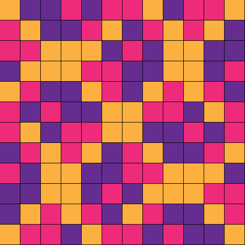
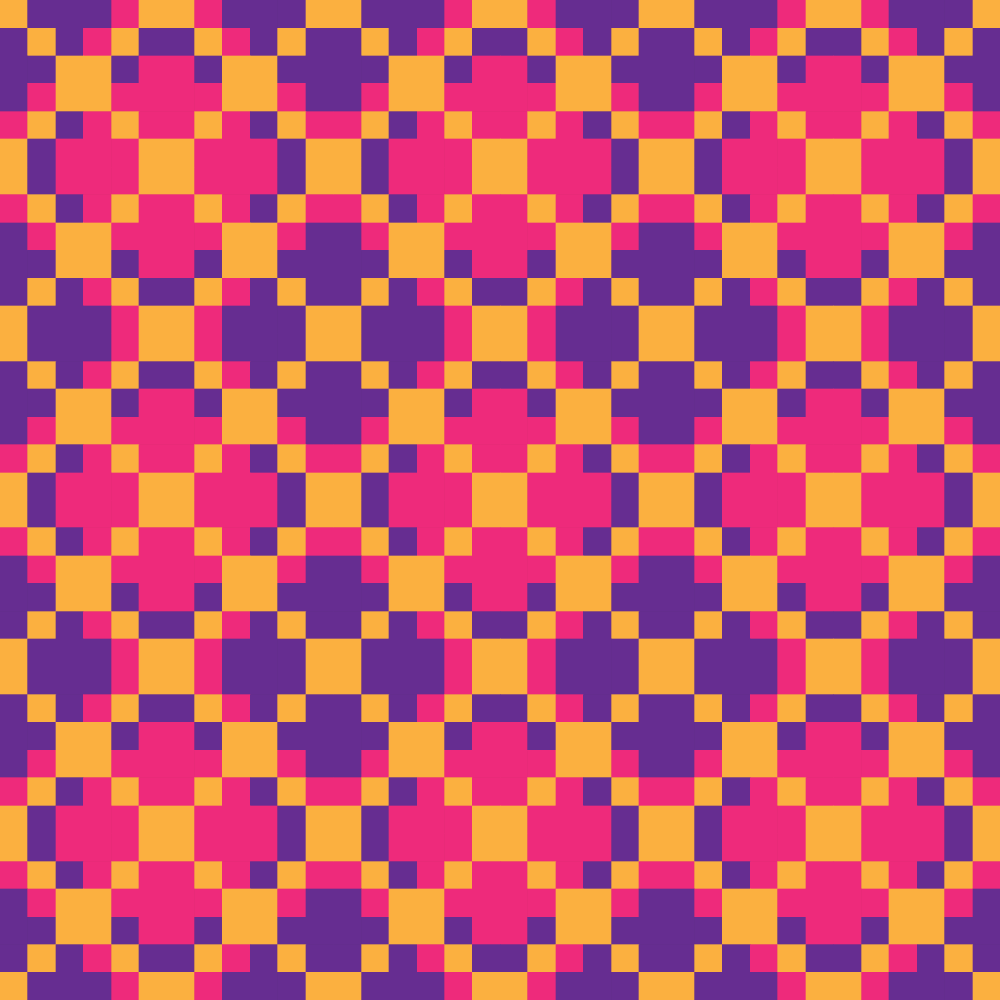
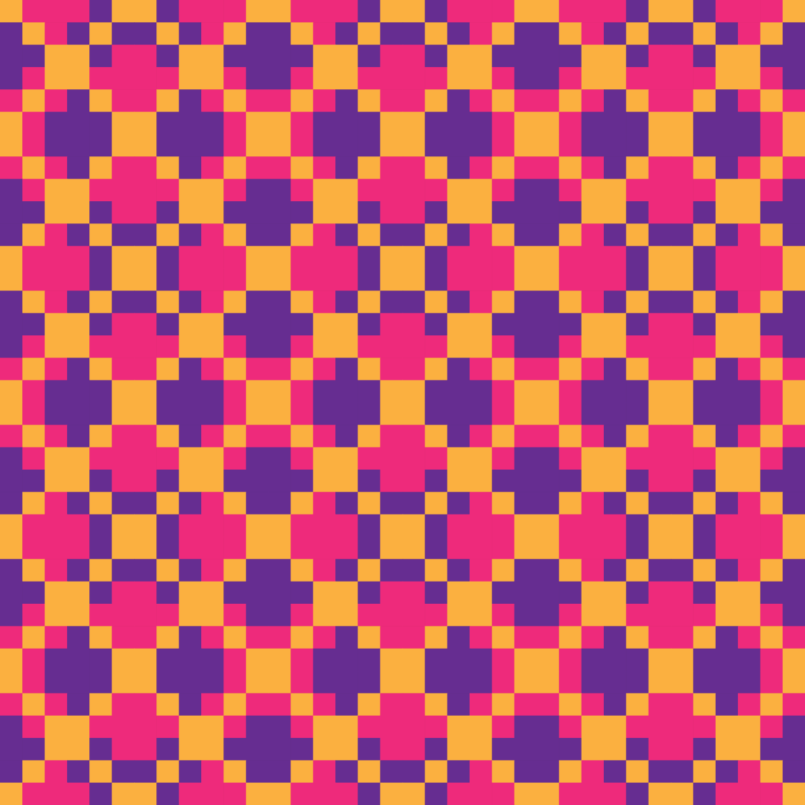
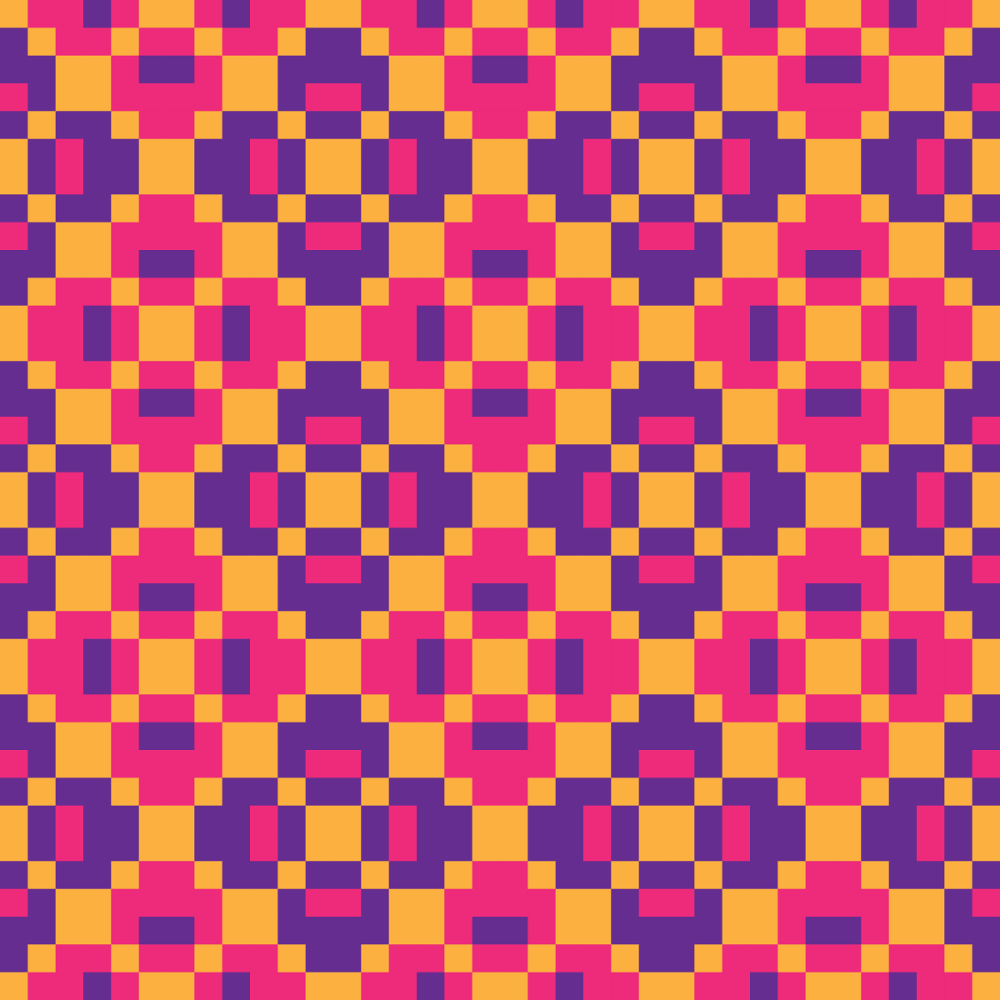
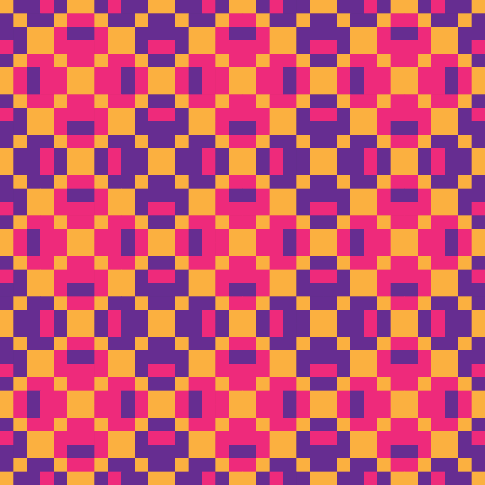
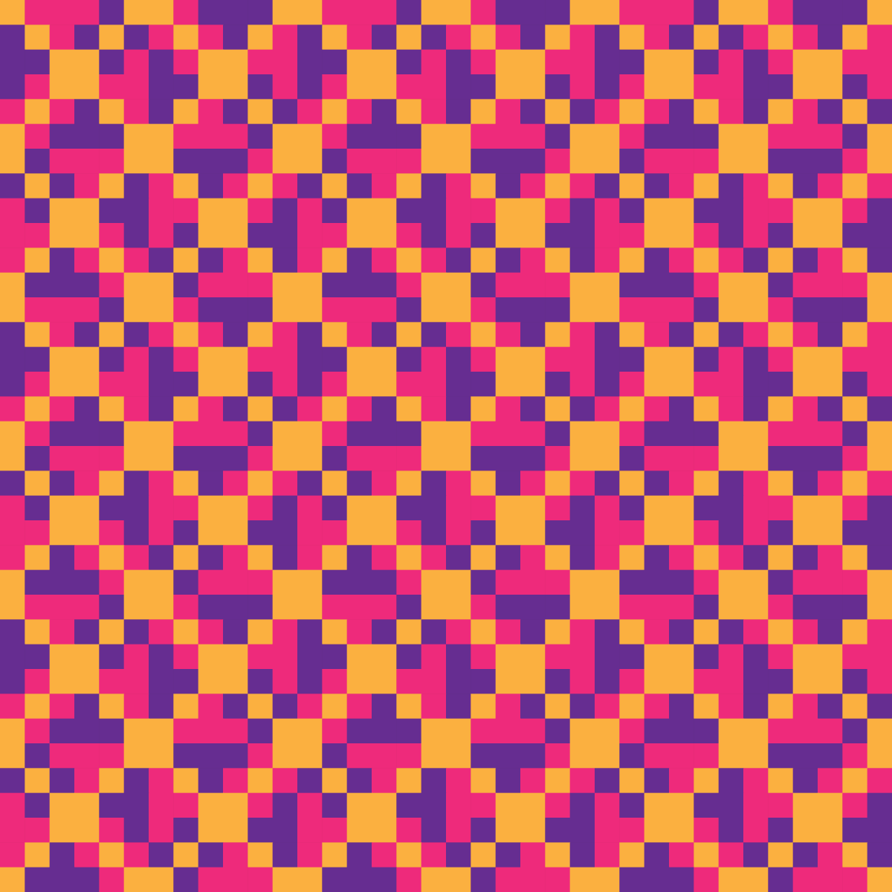
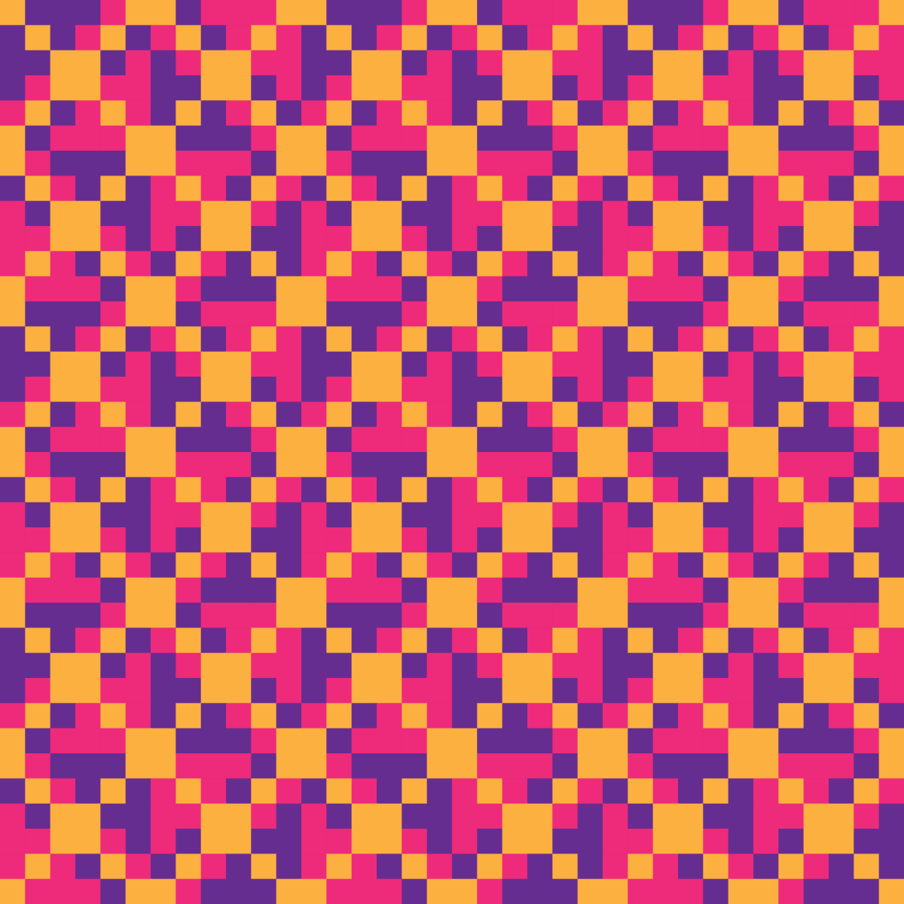
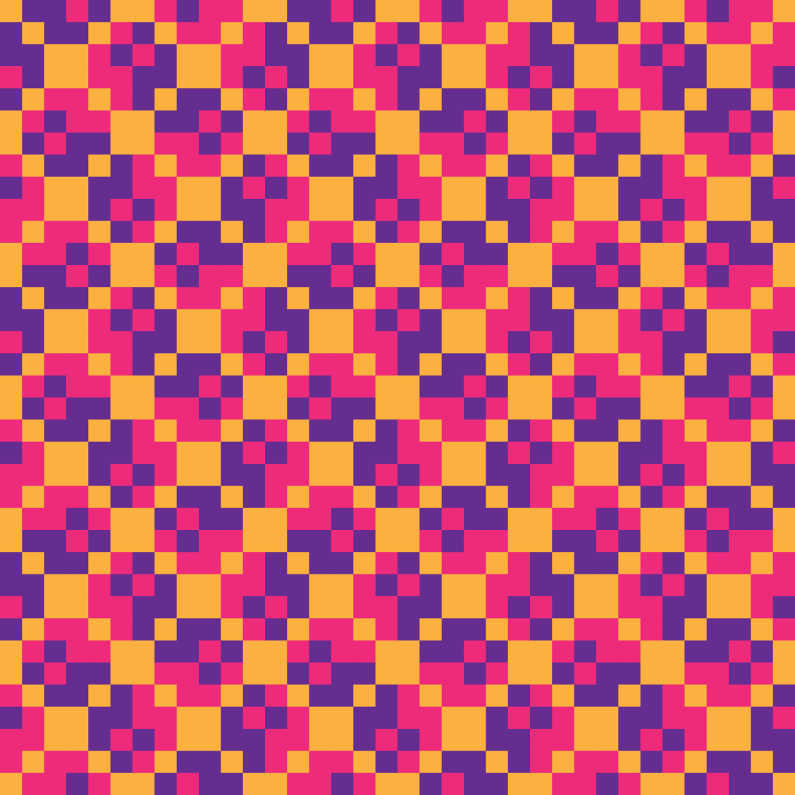
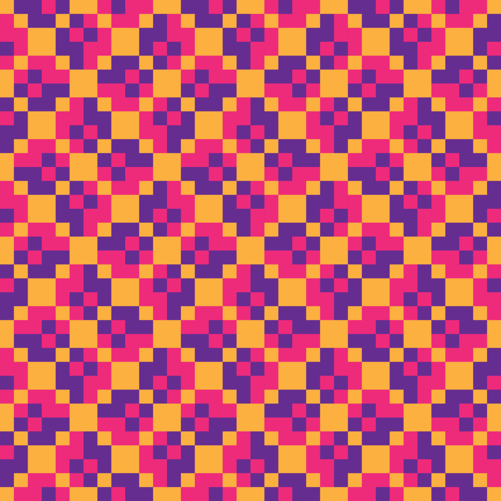

Altre lingue: Français · English · Español · ไทย · Deutsch · 日本語
Esagramma 15 (n. King Wen 34) — Da Zhuang, La Potenza del grande
Indice binario 15 (da 0 a 63; «n. cronologico» del sito, ordine per pesi binari) · n. tradizionale King Wen 34 · 大壯
Di Anibal Edelberto Amiot — Aggiornato il 17 novembre 2026
Traduzione non ancora rivista — se noti un errore, segnalacelo.

il figlio maggiore
il padre
Il Tuono sopra il Cielo: l'immagine della potenza del grande. Una forza considerevole si innalza al punto più alto, visibile a tutti, capace di scuotere ciò che incontra sul suo cammino. È la figura della potenza al suo apogeo, che deve imparare a dominarsi proprio perché può travolgere tutto. Così l'uomo nobile percorre solo i sentieri conformi al rito: la grande forza senza la giusta misura diventa la propria rovina.
L'influenza si amplifica fino a diventare una forza che non si contiene più. Ciò che comincia come una semplice risonanza può, se nulla la inquadra, crescere fino a sfuggire a ogni controllo. Questa linea avverte che la potenza senza disciplina si ritorce, prima o poi, contro chi la dispiega.
Le sei linee
Alla base della terra, il pieno si scuote: l'impulso yang che portava l'intera figura acconsente a cedere il posto.
La terra consolidata tocca il suo limite: la solidità che sosteneva l'edificio si appresta a cambiare natura.
Alla soglia tra terra e uomo, la forza vacilla: ciò che agiva con fermezza esita prima di rovesciarsi.
Nell'azione dell'uomo, il pieno trova il suo limite: l'iniziativa che guidava la figura si ripiega su se stessa.
Al posto del saggio, il vuoto si riempie: la duttilità che governava con discrezione si carica di una forza nuova.
In cima, il vuoto raggiunge il colmo e si chiude: l'apertura più estrema precipita verso il suo contrario.
Fonte: La Livrée d'Hermès, Anibal Amiot — capitolo 7.1 (pp. 63–68). Versione francese di questa pagina.
Per le nozioni usate qui — quadrato magico, strato ed estrazione, l'I Ching — vedi il lessico del progetto.
I motivi di questo esagramma
Da questo esagramma si generano otto motivi Jacquard 12×12, uno per ogni famiglia ammissibile del sistema. Ciascuno ha la sua pagina (in inglese): cella, pavimentazione, ricolorazioni e dati.

Bases — YANG mutant
Bases — YANG
Pair of two — YANG + YIN mutant
Pair of two — YIN mutant + YANG mutant
Pair of two — YIN + YANG
Pair of two — YIN + YANG mutant
Triple — without YANG
Triple — without YANG mutantEsagrammi vicini
14 — Heng, La Durata · 16 — Bi, La Solidarietà
Esagrammi che condividono un trigramma
Stesso trigramma superiore (☳ Zhen): 8 — Yu, L'Entusiasmo · 9 — Zhen, L'Eccitante · 10 — Jie, La Liberazione · 11 — Gui Mei, La Fanciulla che sposa · 12 — Xiao Guo, La Preponderanza del piccolo · 13 — Feng, L'Abbondanza · 14 — Heng, La Durata
Stesso trigramma inferiore (☰ Qian): 7 — Tai, La Pace · 23 — Xu, L'Attesa · 31 — Guai, Lo Sfondamento · 39 — Da Chu, La Forza addomesticatrice del grande · 47 — Da You, Il Possesso di grandi cose · 55 — Xiao Chu, La Forza addomesticatrice del piccolo · 63 — Qian, Il Creativo